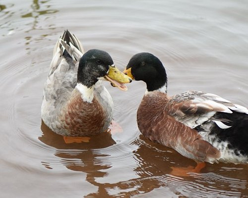

It is one of the most visited attractions in Mahabaleshwar. The scenic beauty of the calm waters of the
lake and guided boating makes it very convenient and fun place to enjoy for families with young children
too. The buttery roasted corn locally called as ‘bhutta’ and the very delicious and sweet strawberries are
sought after munching options for the visitors, both children and adults alike. It is nice place to invoke
the photographer in you to have perfect clicks with family and friends.
This place is famous for an amazing experience of witnessing beautiful dawn with sun rising amidst
mahableshwar hills. Tourist visit this spot to see a beautiful early morning with vast expanse of land,
fresh air, unending openness, rising sun in front, and a full moon behind and very few adventurers
around. Best location for early morning photoshoot.